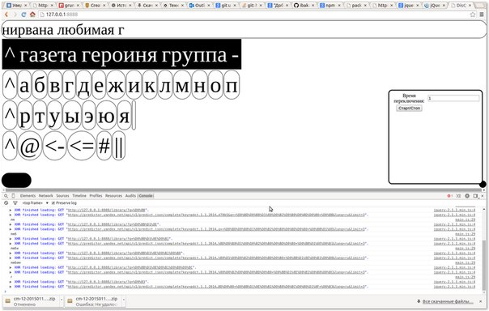

Альтарнативная коммуникация
и прикладное программирование
Мои идеи и наработки в этой сфере.
Кто я?
- Иван Бакаидов
- 17 лет
- Учусь в школе "Динамика"
- Программирую на JavaScript, довольно хорошо (часто знаю что будет содержать this :-) )
- Использую ААК в жизни
- Интересуюсь механизмом диалога с человеком с отсуствуем речи
Передо мной Вам рассказовали про ААК, но все же буду занудой и еще раз дам определение.
Альтернативная коммуникация
Это все методы передачи информации от человека к человеку нестандартным способом (обычно неустная речь).
От себя могу добавить, что сейчас общество развивается, и стандартный способ общения перетекает в письменную речь.
Планирую проект с девочкой, которая говорит весьма понятно, а компьютером владеть не может и поэтому не может в полной мере общаться со сверстниками, по-моему.
И главная задача при ААК, хорошо понять среду, лексику, в которой человек будет использовать средства ААК
Не много юмора
Как выглядит человек с недостаком общения

Мои средства ААК
Бумажная клавиатура
Плюсы
- Стоит 30 рублей
- Любые символы
- Человеческий Т9
Минусы
- Трудно воспринимаются длинные фразы
- Собеседник должен владеть лексикой
- Надо печатать одним пальцем
- Меееееееееееедлееееееееееноо

Компьютер. Блокнот
Плюсы
- Сохраняется все, что написано, можно сослаться на выше сказанное
- Печатают пальца три-четыре, что быстрей
Минусы
- Дорогой
- Большой
- Надо грамотно писать
- Мееееееедлееееено

Планшет. DisTYpe
Одна из редких разработок, прикложение под android, которое говорит набранное в нем текст. Скоро в google play.
Плюсы
- Переводит текст в речь
- Маленькое мобильное устройство
- Никому не надо дополнительно читать процесс набора. Набрал -> сказал.
Минусы
- Дорогой
- Не удобно печатать на планшете
- Люди зачастую не разбирают голос синтезатора
- Мееееееедлеееееееееееееееееено
Соц. сети
Плюсы
- Социальность
- Смайлики (которые я не испульзуют, ибо они не выражают всю глубину тлена)
- Собеседник в тех же позициях
Минусы
- Нужен интернет
Человек, который понимает мою речь
Плюсы
- Привычный для собеседника выход (речь)
- Дополнение речи своими мыслями
- Собеседник в тех же позициях
Минусы
- Хочет есть, пить, и ходить в туалет
- Ограничен в пересечении лексик
- Не понятно, это инвалид сказал или переводчик просто выдал верный ответ

Disqwerty
Теперь о средстве, которое я разработал для более тяжелых инвадидов - DisQwerty.
с чего все началось.
Летом мне было очень скучно, шли дожди. Я разрабатывал ныне покойный проект photoloc.ru. Карта где можно отметить крутое место для фото, и мне нужно было проверить возможность языка JavaScript, а уже хорошо написанный проект ломать не хотелось. По этому я создал второй проект, идею подала ученица 2-3 класса, Ангелина Титова. Думаю многие в зале знают, что это клавиатура, которая управляется одной кнопкой.
P.s. Проект photoloc.ru не набрал свою массу клиентов и нам надоело платить за хостинг.
Что она умеет?
Я думаю DisQwerty не стала так популярна, будь она просто клавиатурой с возможностью ввода одной кнопкой (далее буду сокращать до ВОК). Данные клавиатуры есть в стардатных возможностях многих опериционных систем.
И так, какие плюсы я вижу:
Основной принцип
Медленно?
Очень.
А вот так?
Круто?
Да, если ребенок умеет читать.
Но если нет...
Вот так мы крепим кнопку.

Кнопки из школы. Вообще сами кнопки стоят 60$. Но сам роллер стоит 700$, но я сейчас придумал, что эту кнопку можно подключать через специальную плату из Китая. С сборкой 2500 руб. Ксхемы - бесплатно.
Есть версия для андроид. Там надо тапать по экрану. Ищите в google play market "DisQwerty".
Над чем я сейчас работаю?
DisQwerty имеет два направления развития. Первый - добавление функционала, убыстряющего ввод, путем добавления функций. Второй - приспособление под конкретного ребенка.
Над чем я сейчас работаю:
- Внедрение клавиатуры в работу с детьми (занимаюсь этим прямо сейчас ;-) )
- Внедрение функции яндекс.предикт для Т9 ввода.
- Работа с кодом программы:
- Привидение его в пригодный вид для работы в команде.
- Создание модульной системы функционала. Чтобы можно было собрать клавиатуру под ребенка без меня.
- Поиск денег на разработку.
Где взять?
У меня. Пока не разработана модульная система вам будет трудно выбрать нужную версию продукта. Я всегда буду рад вам выслать нужную версию. Конктакты будут на последнем слайде.
Конец
Контакты: